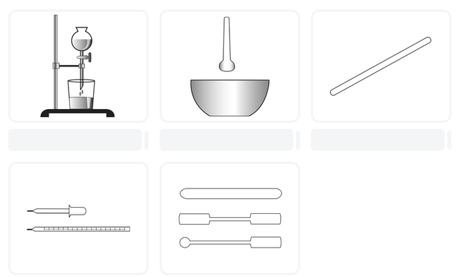

> Введите ваши данные для доступа к терминалу:
БИОЛОГИЧЕСКИЙ МОДУЛЬ: МЕТОДЫ ИССЛЕДОВАНИЯ В БИОЛОГИИ
Выберите подходящие по смыслу слова из выпадающих списков:
Одним из самых первых методов, которыми стал пользоваться ещё первобытный человек, . Более сложный практический метод — это . отличается от более активным воздействием на изучаемый объект.
Перетащите плашки с описанием функций в соответствующие ячейки под изображениями:

Для измерения массы тела используют:
Выберите подходящие по смыслу понятия из списков:
— особый вид человеческой деятельности, направленный на получение новых знаний об окружающем мире.
— это совокупность приёмов и операций, используемых при построении системы научных знаний.
С помощью какого метода биологии можно изучать сезонные явления в природе, например листопад?
Что из перечисленного биологи относят к фиксированным объектам?
Соотнеси объекты с их методом приготовления:
Вычеркни те объекты, которые НЕ относятся к живым:
Распредели по группам объекты природы:
Полученные в ходе наблюдения ответы на поставленные вопросы отмечают: